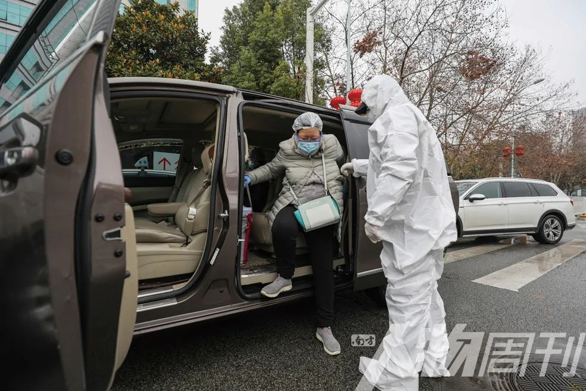
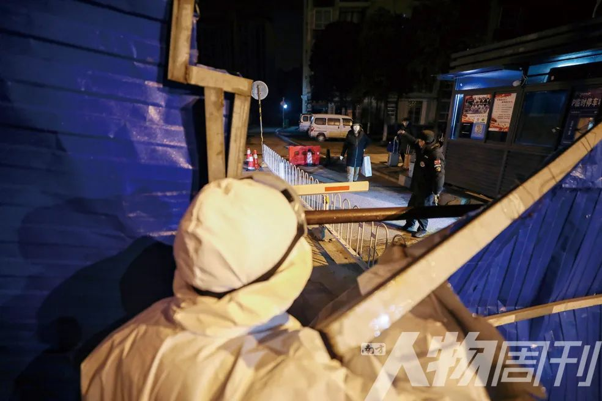
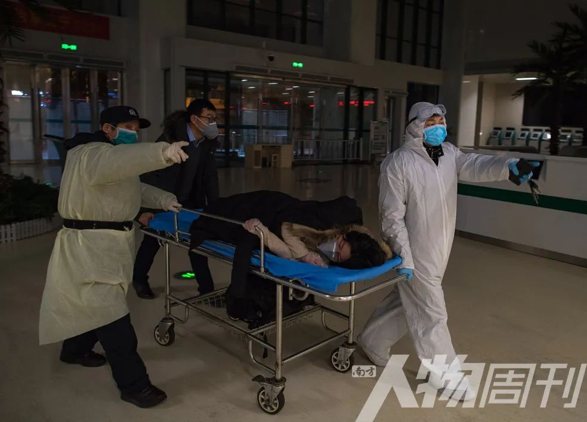

肺炎时期的“生门”故事
原文链接 备份链接 ********** *****没有一个准确的数据，说明现在武汉有多少正在准备分娩的孕妇，但她们的生活被这场疫情彻底打乱了。***** 2月1日，在入住武汉一家新型肺炎特殊病人定点医院的第二天，龚林顺产一个7.1斤男 …

2月26日上午10时10分，武昌张之洞路，“W大武汉紧急救援队”志愿者李文建驾车将对接孕妇及其母亲送达医院
截至3月16日，“W大武汉紧急救援队”的志愿者已安全护送孕妇32人，32名宝宝顺利降生。尽管现在120和政府相关部门的车辆服务资源已经有了很大的好转，但在志愿者车队的求助排期中，从3月16日到31日，还有21位预约的孕妈妈在等待，疫情尚未结束，还有重任等待着这些“新生命的摆渡人”
本文首发于南方人物周刊2020年第6期
图、文 | 陈卓、温红蕾、肖艺九
编辑 | 方迎忠 郑洁
全文约2349，细读大约需要5分钟
2月22日，凌晨两点的武汉春寒料峭。王震驾驶着自己的小车，开着双闪一路疾驰在武汉南三环上。几分钟前，他接到他志愿服务的一名孕妇打来的求助电话后，立即从沌口经开区金色港湾小区的家中出发，去往33公里外的高新二路佳源花都小区，紧急接送这位孕妇和家属，送往湖北省妇幼保健院生产。
1月23日，武汉因新冠肺炎疫情封城后，王震就加入了包括他在内、由五名志愿者组成的“W大武汉紧急救援队”微信群，和群友王紫懿、李文建、朱伟、杨学彬开始接送缺乏交通工具去医院的待产孕妇，成为这些即将出生的“新生命的摆渡人”。
王震接送的孕妇魏利静是河南人，她的丈夫杨天志是安徽人，两人在武汉读完大学后工作恋爱结婚，定居在这座城市。魏利静的预产期是2月21日，两人早就做好了留在武汉过年待产的准备，杨天志也给父母买好了春节前一天来武汉的车票。可疫情突至，武汉封城令让这一家人都懵了，两人就这样被封在了家中。
没有交通工具，魏利静没法去做产检，120都在救治新冠肺炎病人，即便能有救护车来，夫妻俩也不敢坐。1月底，老婆腹部不适，杨天志到处求助，还是他们所在社区的书记李励开着私家车送他们去医院做检查的。后来，魏利静在一个“武汉留守孕妈妈群”中看到“W大武汉紧急救援队”志愿者车队能提供紧急接送孕妇的服务，这才联系上了随时可用的车辆。
2月22日18时10分，湖北省妇幼保健院7楼6号产房，在助产士李黎的耐心协助下，魏利静顺利生下一位“小公主”。入夜，杨天志给王震发来微信报喜，感谢志愿者们的鼎力相助：“是你们在最艰难的时刻帮助我们的家庭渡过难关，恩情当永世难忘！”

2月22日凌晨3时19分，“W大武汉紧急救援队”志愿者王震在武汉高新二路佳源花都小区北门等待他服务的孕妇和家属

2月22日凌晨4时，杨天志扶着孕妇魏利静，王震帮他们拉行李进入湖北省妇幼保健院

2月22日凌晨3时34分，小区另一出口距离太远，王震叫来保安师傅帮忙拆开封闭小区的围挡，以便将孕妇魏利静尽快送医

2月22日凌晨4时22分，将魏利静及其老公杨天志送进湖北省妇幼保健院后，王震用酒精给车辆消毒

2月22日下午18时10分，湖北省妇幼保健院6号产房，魏利静在助产士李黎的协助下，顺利产下一位“小公主”
“W大武汉紧急救援队”的群主王紫懿是一名88年出生的女生，本职工作是营养师，因为自己女性的优势，在几个留守孕妈妈微信群中深得大家的信任。1月20日，钟南山宣布新冠肺炎“肯定人传人”后，王紫懿和朋友们一起行动起来，采购医疗物资和食品，送给前线医院的医护人员。在一次捐助活动中，她偶然听到志愿者和医护人员提起，很多留守孕妇缺乏交通工具去医院。身为女性，她深知这个时期孕妇的艰难，便通过朋友圈发起了招募带车司机的公告。
公告迅速得到响应，李文建、王震、朱伟、紫懿的父亲杨学彬加入进来。李文建和哥哥在武汉经营着一家汽车服务公司；王震自嘲是一名“程序猿”，做了七年的北漂之后，又回到家乡武汉继续干老本行；朱伟大学毕业后和老婆一起，留在武汉工作创业；杨学彬开驾校当教练，疫情期间在社区做起了志愿者，为居民提供出行服务。

2月22日下午，湖北省妇幼保健院产房外，戴着口罩徘徊等待的孕妇家属

2月26日上午10时11分，武昌张之洞路，“W大武汉紧急救援队”志愿者李文建驾车将对接孕妇及其母亲送达医院后，向群主汇报工作完成情况
虽然王紫懿年龄最小，但做起事来非常认真，她迅速定下了群规——做一名志愿者，心是要有热情的，但头脑必须是冷静的；必须是换过一本驾照的老司机；要保证孕妇的安全就不能再随意外出去做别的志愿服务，保持车辆的清洁和自身不被感染，若发现身体有异常情况将被强制退出；每人配备一把额温枪，每天测温汇报；接送孕妇时还要对孕妇及家属进行测温，碰到有发热、咳嗽等情况，要协助孕妇联系救护车送至定点医院；每次送完孕妇后都要对车辆用酒精进行全面消毒……
身为群主和发起人，王紫懿还要想办法给大家准备防护物资，刚开始只有一次性雨衣，后来好不容易找到一点隔离衣和护目镜，“接孕妇时才能用，平时不准浪费。”武汉市内的交通管制严格，她又找到红会旗下的一家公益组织说明情况，通过武昌区人民政府为车队司机办理了防疫期间的车辆通行证。每天，她都要统计几个留守孕妈妈群中的求助信息，根据她们的预产期一一编排好顺序，分派给队员对接。为防出现队员有事或者睡着了“漏单”联系不上的情况，她当起了“癞子”，成为所有待产孕妇的紧急情况联系人，有时一天下来只能断断续续睡三四个小时。

2月26日晚19时47分，汉口黄孝河路，“W大武汉紧急救援队”志愿者王紫懿接到孕妇及家属后，对他们进行体温检测

2月29日凌晨，王震（右）协助将产妇刘婷送至CT室做产前检查

2月29日，“W大武汉紧急救援队”志愿者（左起）李文建、朱伟、王紫懿、王震、杨学彬一起加油打气
截至3月16日，“W大武汉紧急救援队”的志愿者已安全护送孕妇32人，32名宝宝顺利降生。尽管现在120和政府相关部门的车辆服务资源已经有了很大的好转，但在志愿者车队的求助排期中，从3月16日到31日，还有21位预约的孕妈妈在等待，疫情尚未结束，还有重任等待着这些“新生命的摆渡人”。
（特别鸣谢杨天志和魏利静夫妇、湖北省妇幼保健院和该院产科助产士李黎）

中国人物类媒体的领导者
提供有格调、有智力的人物读本
记录我们的命运 · 为历史留存一份底稿
往期精选


点击“阅读原文”即可订阅和购买最新杂志
原文链接 备份链接 ********** *****没有一个准确的数据，说明现在武汉有多少正在准备分娩的孕妇，但她们的生活被这场疫情彻底打乱了。***** 2月1日，在入住武汉一家新型肺炎特殊病人定点医院的第二天，龚林顺产一个7.1斤男 …
原文链接 备份链接 叶青武汉日记：华科制定宏大的发展计划 5602 来源：正和岛 作者：叶青 03-23 [ …
原文链接 备份链接 图片来源：图虫 记者：翟星理 “ 2020年3月22日中午12点8分，055号志愿者周廉卜接种新冠疫苗注射。他在朋友圈记录下这一刻的感受：“有这样的一次经历，不敢说此生无憾，但是应当能够永存记忆之中了。” ” 中国首个 …
原文链接 备份链接 两个月前的1月23日，武汉封城，900万人的城市，被一纸通知紧急暂停。整整两个月后的今天，武汉迎来复工后的第一个工作日，这座城市正在缓慢重启。 过去的60天，是武汉全民战役的六十天，也是导演程逸飞拍摄武汉抗疫纪录片的六 …
原文链接 备份链接 2月19日中午，武汉市百步亭社区，一位在午休的“下沉”干部。中青报·中青网记者 赵迪/摄 作者 | 中青报·中青网记者 马宇平 编辑 | 从玉华 1月23日，武汉宣布封城后3小时，郝南在社交媒体上发布了nCoV …